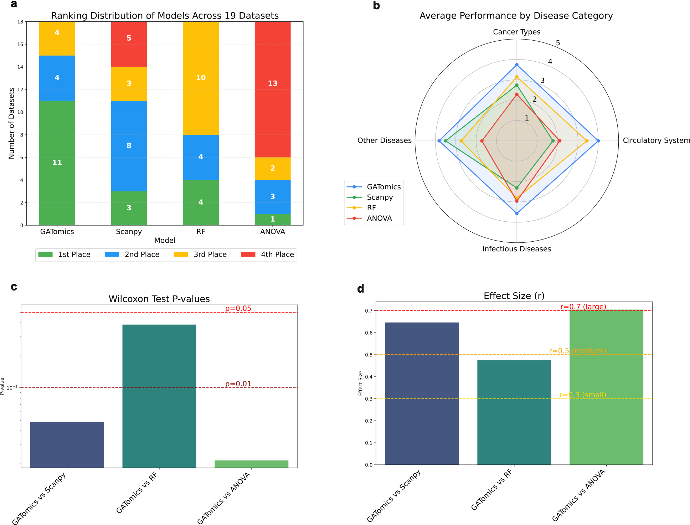
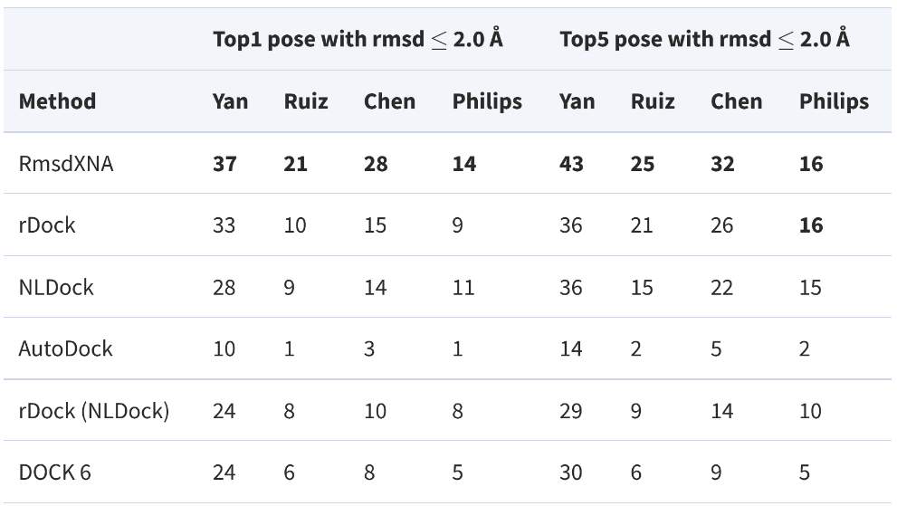
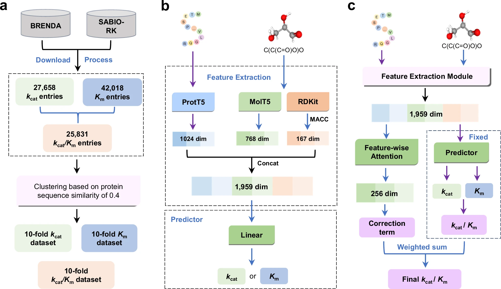

Omics Data Analysis & Biomarker Identification
Our flagship GATomics platform revolutionizes single-cell multi-omics analysis using advanced graph neural networks. Validated across 22 disease datasets with industry-leading performance.
Proven Performance Across 19 Disease Datasets
Outperforming traditional tools like Scanpy, ANOVA, and t-test with statistically significant improvements
What We Deliver
Cross-Stage Disease Analysis
Simultaneously analyze diagnosis, remission, and relapse stages to identify critical regulatory genes missed by traditional methods
Novel Biomarker Discovery
Uncover hidden therapeutic targets and chemoresistance mechanisms through advanced graph attention networks
Rapid Data Processing
Handle datasets from thousands to millions of cells with GPU-accelerated analysis
Supported Data Types
Why Choose GATomics?
- ✓ Proven success in AML, solid tumors, and rare diseases
- ✓ Identifies therapeutic targets missed by conventional analysis
- ✓ Publication-ready results with comprehensive reports
- ✓ Expert consultation from our PhD-level bioinformatics team
AI-Powered Virtual Screening
Our proprietary AI models combined with physics-based docking deliver unprecedented accuracy in hit identification. This data-driven approach enables rapid screening through ultra-large chemical libraries.
Our Technologies
BIND - Protein Target Screening
Our sequence-based AI model predicts binding probability between small molecules and protein targets, enabling ultra-fast screening through massive chemical libraries.
RmsdXNA - RNA/DNA Target Screening
Machine learning model specifically designed to rescore binding poses for RNA/DNA targets, overcoming the limitations of traditional docking methods for nucleic acid targets.
Supported Targets
Screening Process
AI-driven screening combined with physics-based validation ensures high-quality hits
Miniprotein & Peptide Design
Target "undruggable" proteins with our AI-powered miniprotein and peptide design platform. Our validated pipeline delivers novel biologics for challenging targets beyond the reach of small molecules.
Expanded Target Space
Access protein-protein interfaces and previously undruggable targets with high-affinity binders
AI-Driven Design
State-of-the-art models generate novel sequences with optimized stability and specificity
Wet-Lab Validated
All designs undergo rigorous experimental validation to ensure real-world efficacy
Design Capabilities
Molecular Dynamics Simulations
Our expert MD team leverages state-of-the-art GROMACS simulations powered by NVIDIA H100 GPUs to validate AI-generated hits. With years of experience in complex biomolecular systems, we ensure scientific rigor and dramatically reduce false positives.

Real-time visualization of protein-ligand dynamics from our GROMACS simulations
Our MD Expertise
Advanced GROMACS Workflows
Optimized protocols for various biomolecular systems with enhanced sampling techniques
GPU-Accelerated Computing
NVIDIA H100 infrastructure enables microsecond-scale simulations in hours, not weeks
Comprehensive Analysis
From RMSD/RMSF to MM-PBSA free energy calculations and interaction fingerprinting
Technical Capabilities
Why Choose Our MD Services?
Experience & Infrastructure
- 10+ years collective MD experience
- 1000+ successful simulations completed
- Latest NVIDIA H100 GPU cluster
- Microsecond simulations in hours
Deliverables
- Detailed trajectory analysis
- Binding free energy profiles
- Key interaction identification
- Publication-ready visualizations
Wet-Lab Hit Validation
Complete the discovery cycle with our comprehensive experimental validation services. From initial assays to advanced characterization, we confirm computational predictions with real-world data.
Cell-Based Assays
Viability, proliferation, and phenotypic screening in relevant disease models
Biochemical Validation
Binding kinetics, enzymatic assays, and target engagement studies
Advanced Characterization
Flow cytometry, microscopy, and mechanism of action studies
Validation Services
AI-Powered Enzyme Engineering
Our breakthrough CataPro platform predicts enzyme kinetic parameters with unprecedented accuracy, revolutionizing enzyme discovery and optimization. Using advanced deep learning and molecular fingerprints, we accelerate the development of industrial biocatalysts.
CataPro Architecture
Neural network framework combining protein language models and molecular fingerprints for accurate kinetic parameter prediction
What We Predict
Turnover Number (kcat)
Maximum catalytic reactions per enzyme per unit time - essential for understanding enzyme efficiency
Michaelis Constant (Km)
Substrate concentration at half-maximal velocity - indicates enzyme-substrate affinity
Catalytic Efficiency (kcat/Km)
Overall enzyme performance metric - critical for comparing and selecting optimal biocatalysts
Our Approach
- ✓ ProtT5-XL protein embeddings for sequence representation
- ✓ MolT5 embeddings and MACCS fingerprints for substrate encoding
- ✓ Neural network correction term for enhanced kcat/Km accuracy
- ✓ Unbiased cross-validation on curated BRENDA and SABIO-RK datasets
Applications
Success Story
CSO Enzyme Optimization
Using CataPro predictions combined with traditional methods, we identified SsCSO enzyme with 19.53x increased activity compared to the initial CSO2 enzyme. Further engineering improved its activity by an additional 3.34x, demonstrating CataPro's power in guiding experimental efforts.